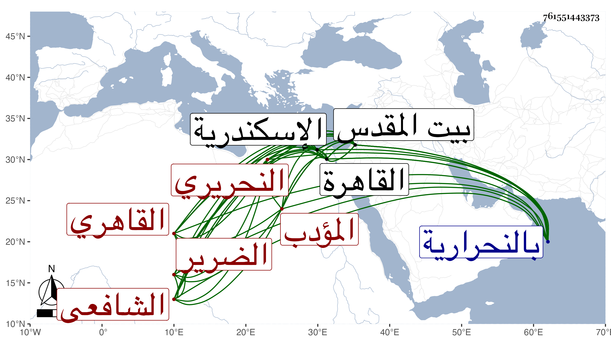

0902Sakhawi.DawLamic.ITO20230111-ara1.EIS1600.761551443373
Biography ID: 761551443373
59
محمد بن أحمد بن عمر بن محمد بن عمر الشمس النحريري ثم القاهري الشافعي المؤدب الضرير ، ويعرف بالسعودي نسبة لقريب له كان يخدم الشيخ أبا السعود ورأيت من قال ممن نسخ له شيئا قديما أنه يعرف بابن أخي السعودي فكأنه ترك تخفيفا . ولد سنة ست وخمسين وسبعمائة بالنحرارية ونشأ بها فحفظ القرآن والعمدة والتنبيه وغيرهما واشتغل بها في الفقه على قضاتها البرهان بن البزار والتاج عتيق والشهابين المنصوري وابن الإمام وعليه بحث في الكشاف أيضا ثم انتقل إلى القاهرة فتكسب فيها بزازا ببعض حوانيتها وكذا بالشهادة مع أخذه في الفقه أيضا عن الشمس البكري وفي الفرائض عن الشمس الغرافي وكذا أخذ عن ابن الملقن الفقه أيضا والتذكرة له في علوم الحديث وسمع عليه المسلسل وغيره وعن البلقيني ولازمه وخدمه في جمع أجرة أملاكه وغيرها ، وتلا لأبي عمرو على الفخر البلبيسي وسمع على التنوخي والصلاح الزفتاوي وابن الشيخة والحلاوي والسويداوي والأبناسي والغماري والمراغي وغيرهم ورام الحج مع الأشراف شعبان بن حسين فكانت تلك الكائنة فرجع مع من رجع وتوجه من هناك إلى القدس فأقام به شهرا ونصفا وتلا فيه لأبي عمر وأيضا على الشمس الفيومي ، ثم عاد لبلده فأقام مدة ثم رجع إلى القدس أيضا فأخذ الفقه عن النجم بن جماعة والبدر العليمي والأخوين الشمس والبرهان ابني القلقشندي وبحث على كل منهما التقريب في علوم الحديث للنووي وعلى المحب الفاسي في العربية والفرائض وسمع هناك في صفر سنة ثلاث وثمانين على أبي الخير بن العلائي الجزء الأول من مسلسلات والده الصلاح بل قال وهو ثقة ضابط أنه سمع بالقدس مع البرهان القلقشندي الدارمي على العماد بن كثير يعني في المرة الأولى في غالب ظنه ، ودخل اسكندرية فسمع بها من لفظ العلامة ناصر الدين محمد بن أحمد بن فوز الأمدى الشافعي شيئا من أول كل من صحيح البخاري والرسالة القشيرية وحديثا مسلسلا موضوعا ولو وجد من يعتني به ويرشده لأدرك إسنادا عاليا ، واستوطن القاهرة وتنزل في صوفية البيبرسية وتكسب بتأديب الأطفال بالمسجد الملاصق لسكن شيخنا جوار المدرسة المنكوتمرية وانتفع به من لا يحصى كثرة كشيوخنا ابن خضر والجلال بن الملقن والبهاء البالسي وابن أسد وابن عمر الطباخ المقري والوالد والعم وكان القاضي كريم الدين بن عبد العزيز ناظر الجيش وصهر شيخنا ينفعه كثيرا ولا يعتمد غيره في الإشهاد على قضاياه ، وأشير إليه بالتقدم في التأديب مع الحرمة الوافرة وشدة البأس على الأطفال حتى أن بعضهم رام أن يدس عليه سما وكاد يتم فلطف الله به لحسن مقصده ، وقد حدث باليسير سمع منه الفضلاء ، ورأيت شيخنا علق في تذكرته شيئا من نوادره فقال سمعت جارنا الفقيه السعودي وساق شيئا ، بل قرأ بحضرته شيخنا البرهان بن خضر في سنة ثلاث وثلاثين عليه المسلسل المشار إليه ، وكان شيخا جيدا فاضلا مفيدا يقظا ظريفا فكها منقبضا عن الناس ملازما للمسجد المذكور ، فلما كان في حدود سنة ثلاثين حصل له مرض شديد ثم ماتت زوجته عقبه وابناه منها فانزعج وذهب إلى المقبرة ثم رجع في حر شديد فأطعمه بعض أصحابه عسل نحل فغارت عينه اليمنى ثم بعد برهة تبعتها الأخرى مع ثقل سمعه ، وانقطع ببيته في حدود سنة سبع وثلاثين فكان حلسا من أحلاسه مع ادامته التلاوة وعدم التشكي وكان شيخنا كثير البرله والتفقد لأحواله وكذا من شاء الله ممن قرأ عنده كالوالد وحصل له مرة مرض الدرب ومل منه أهله فنقلوه إلى البيمارستان إلى أن نصل منه مع أنه قل أن يدخله درب ثم يخرج حيا . وقد جودت عليه القرآن بتمامه حين انقطاعه بمنزله ودربني في آداب التجويد ، وقرأت عليه تصحيحا في العمدة وغيرها والمسلسل المشار إليه وكنت شديد المهابة منه لشدة بأسه وصولته . مات في ليلة الأربعاء منتصف رمضان سنة تسع وأربعين بعد أن هشم وتحطم ودفن من الغد بالتربة البيبرسية ، وقد ذكره شيخنا في أبنائه وأثنى عليه بكثرة المذاكرة وبأنه خرج من تحت يده جماعة فضلاء وأنه كان لا يفتر لسانه عن التلاوة ، ومن الطائفة أنه قال : نقل لي أن شخصين تماشيا وأحدهما يقال له جلال الدين جعفر فتذاكرا قول العماد الكاتب للقاضي الفاضل مما لا يستحيل بالإنعكاس سر فلا كبابك الفرس وقول الفاضل له دام علا العماد فقال أحدهما بديها رفع جلال جعفر فلما بلغني ذلك قلت رجح نبأ ابن حجر وكذا قال وقد بعث الطواشي فاتن إلى شخص اسمه نتاف وآخر اسمه بلبل فاتن قال لبلبل لاق نتاف ، وقال أيضا مصحفا لقولك ابن حجر شيخ محدثي زمانه أتت حجر بنت نجم جدتي رمانة . رحمه الله وأيانا .
